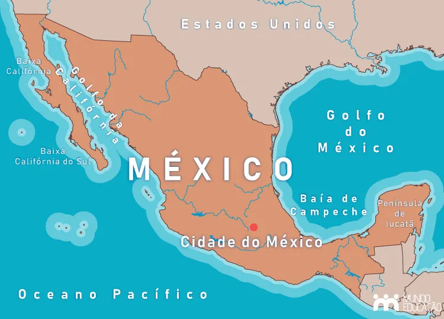

Mapa do México

O México é um país geograficamente situado na América, mais precisamente na América do Norte, entre os oceanos Pacífico e Atlântico. O território mexicano faz fronteira com os Estados Unidos, o Belize e a Guatemala.
Em termos geomorfológicos, o México é caracterizado pela forte instabilidade tectônica, que gera diversos terremotos. O país possui vastas planícies litorâneas, e também, zonas de altitude elevadas, formadas por cadeias montanhosas.
Possui clima tipicamente tropical, com variações como o tropical semiárido e o tropical de altitude. O país recebe forte influência de fatores climáticos diversos e registra a ocorrência de furacões. A vegetação do território mexicano é tropical, com formações florestais ao longo do litoral e regiões desérticas especialmente no norte do país. Os rios Grande e Colorado são os principais da rede hidrográfica mexicana.